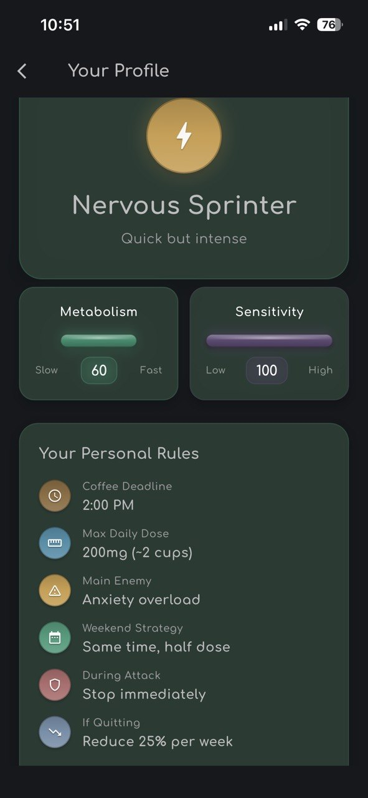
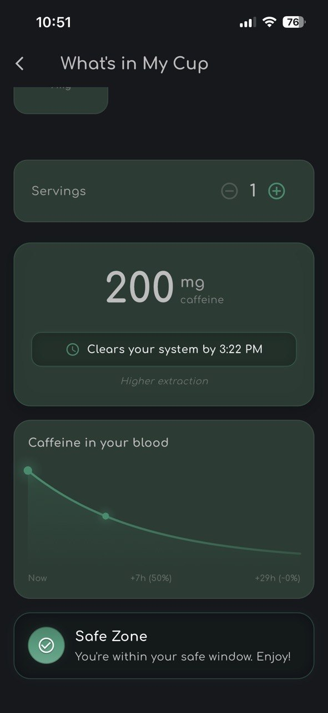
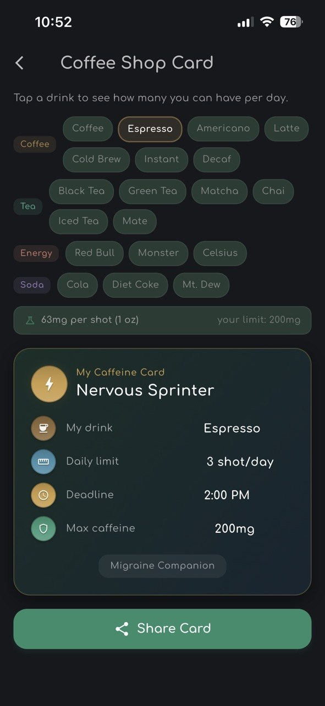
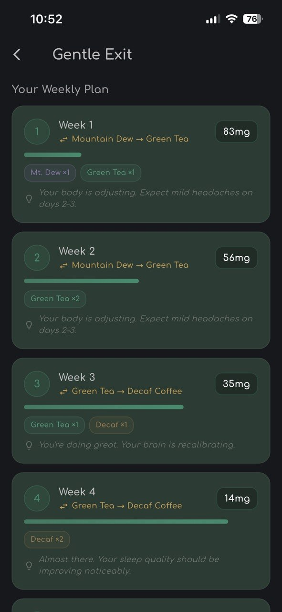

By Rustam Iuldashov
30 years lived experience with chronic migraine | Sources: 9 peer-reviewed references including Journal of Translational Medicine (n=1,851,428), Frontiers in Neurology RCT, The American Journal of Medicine (n=98) | Last updated: March 2026
Medical Review: This content is based on peer-reviewed research from the Journal of Translational Medicine, Nutrition Reviews, Journal of Psychopharmacology, Frontiers in Neurology, and The American Journal of Medicine.
Important Notice: This article is for informational purposes only and does not replace professional medical advice. The Mi Lab tools are behavioral and informational in nature. They do not diagnose, treat, or prevent migraine disease.
Key Takeaways
- CYP1A2 and ADORA2A genetics drive most individual variation in caffeine response — the same dose produces completely different effects in different people [3][4][5]
- The Caffeine Profile Quiz translates 12 behavioral signals into four evidence-based metabolic archetypes, each with its own personal rulebook
- “What’s in My Cup” calculates real-time caffeine clearance using your personal half-life, not population averages [1]
- The Coffee Shop Card externalizes your personal limits as a shareable tool for daily decision-making under pressure
- Gentle Exit uses a gradual substitution algorithm to prevent adenosine rebound — the primary mechanism behind withdrawal-triggered migraine [6][8]
- Day-to-day caffeine variability predicts attacks more reliably than absolute amount — eliminating the surprise is the real intervention [9]
Generic Advice Has a Body Count
“Watch your caffeine.”
Every neurologist says it. Every migraine article repeats it. It sounds like advice. It isn’t. It’s a placeholder — a way to say something without saying anything, because the real answer requires knowing who you are metabolically.
Here’s what “watch your caffeine” ignores: the same 200 mg dose of caffeine clears a fast metabolizer’s bloodstream in roughly three hours. In a slow metabolizer, it is still half-present twelve hours later — circulating silently at midnight, disrupting sleep, quietly priming tomorrow’s attack. [1][2]
Two people. Same cup of coffee. Completely different pharmacological stories.
Mi Lab was built on one premise: generic advice fails because migraine is individual. The four tools inside don’t offer population averages. They offer your numbers.
Two Genes. Everything Changes.
Before the tools make sense, you need to know two genes. They explain more about your relationship with caffeine than any cup count ever will.
CYP1A2 builds the enzyme that metabolizes more than 95% of all the caffeine you consume. [3] A single common variant — rs762551 — splits the population roughly in half: fast metabolizers who clear caffeine in hours, and slow metabolizers who carry it into the night. Fast metabolizers process caffeine approximately four times faster than slow ones. [4]
ADORA2A encodes the adenosine receptor that caffeine blocks when you drink it. A variant in this gene predicts whether caffeine triggers anxiety and sleep disruption in you specifically. [5] It has nothing to do with being an anxious person. It is structural: your receptors are more reactive to the adenosine rebound when caffeine wears off.
DNA tests can confirm these variants precisely. But the evidence is already in your behavior. Does afternoon coffee keep you awake? Do you feel wired and jittery after a second cup? Do you wake up with a headache on Saturday morning after sleeping in? Your body has been answering these questions for years. The Caffeine Profile Quiz simply listens.
Tool 1: Caffeine Profile Quiz
Twelve questions. Each one probes a behavioral marker of CYP1A2 speed or ADORA2A sensitivity.
When you sleep late on Saturday, do you wake with a dull throbbing pressure? That is a withdrawal sensitivity question — it reveals how fast your adenosine receptors rebound when caffeine disappears. [6] Does a second coffee make you edgy? That is a sensitivity marker tied to ADORA2A. Can you drink espresso at 9 PM and fall asleep by 10? That is a speed signal for CYP1A2.
The quiz computes two scores — metabolism speed and receptor sensitivity — and their intersection produces one of four profiles:
- Speed Marathon (Fast metabolizer, low sensitivity): Caffeine clears quickly, so the risk is invisible. You drink more to compensate because you feel nothing dangerous. The accumulation is real; the warning signal isn’t.
- Nervous Sprinter (Fast metabolizer, high sensitivity): Your body clears caffeine rapidly, but the ADORA2A receptors fire intensely when it does. Anxiety and rebound are the dangers, not accumulation. The problem isn’t how much you drink — it’s how hard you land.
- Quiet Accumulator (Slow metabolizer, low sensitivity): Caffeine lingers for twelve hours without obvious discomfort — until it erodes sleep and primes tomorrow’s attack in silence. This is the profile most likely to say “I don’t even feel caffeine anymore.”
- Hypersensitive (Slow metabolizer, high sensitivity): Every cup lingers and lands hard. This profile benefits most from reduction — and also faces the most difficult withdrawal if it tries to quit too fast.
Each profile generates a personal rulebook: a coffee deadline, a daily ceiling, a weekend strategy, a protocol for attack days. These aren’t arbitrary numbers. They are calibrated to the pharmacokinetics of each metabolic type.

Tool 2: What’s in My Cup
Knowing your profile is one thing. Knowing what you just consumed is another.
“What’s in My Cup” is a real-time caffeine calculator. Select your drink, enter the time you consumed it, and the tool produces two outputs: the total milligrams in your system, and the precise time caffeine will have decayed to a clinically negligible level.
The math is exponential decay — the same equation used in pharmacokinetics. Your personal half-life is derived from your speed score: roughly three hours for fast metabolizers, up to twelve for slow ones. [1] Cold Brew at 200 mg through a slow metabolizer’s liver doesn’t clear until the following morning. Knowing that changes the decision at the café counter.
The result appears as a zone signal: Safe, Caution, or Risk — color-coded against your personal deadline, with the exact biochemical reason spelled out. Not “don’t drink coffee too late.” Instead: at your metabolism rate, the caffeine you consume right now will still be measurably active at your target sleep time.
A vague instruction becomes a precise, personalized, time-stamped fact.

Tool 3: Coffee Shop Card
Managing a migraine condition at home is one challenge. Managing it while standing at a café counter — under time pressure, seventeen options on the menu, no caffeine labels visible, someone waiting behind you — is another kind entirely.
The Coffee Shop Card closes that gap. Select any drink — Americano, Cold Brew, Matcha, Red Bull, Chai Latte — and the card instantly calculates how many servings fit inside your personal daily maximum, along with your deadline and dose ceiling. The card is shareable: designed to be shown to a partner, a friend, a barista, or anyone who needs to understand your limits without a lengthy explanation.
It is also, in the language of behavioral science, a commitment device — a visible, tangible statement of your own rules that makes them harder to override in the moment. [7] The moment of decision is the worst moment to do arithmetic. The card does the arithmetic in advance.

Tool 4: Gentle Exit
Stopping caffeine abruptly is the single most reliable way to trigger a migraine in susceptible individuals. A randomized controlled trial published in Frontiers in Neurology had to stop early: abrupt withdrawal triggered severe migraine in seven out of nine participants within days of cessation. [6]
The mechanism is adenosine rebound. Chronic caffeine use causes the brain to upregulate adenosine receptors — manufacturing extras to compensate for the constant blockade. Remove caffeine suddenly, and those extra receptors flood with adenosine. Blood vessels dilate. Neural excitability rises. The migraine threshold drops sharply.
Gradual tapering — reducing by 25–50% every few days — prevents this receptor storm. [8] But “gradual” is not a plan. It is a direction.
Gentle Exit builds the actual plan. You log your current drinks with their real caffeine content — Cold Brew at 200 mg, espresso at 63 mg, Mountain Dew at 55 mg per can. You choose a target: caffeine-free, one tea per day, one light coffee. The algorithm generates a week-by-week substitution ladder, replacing drinks rather than simply removing them: energy drink becomes drip coffee, soda becomes green tea, matcha becomes decaf. Each step is sized to your profile’s reduction rate, minimizing the weekly mg drop to stay below the rebound threshold.
Fast metabolizers feel withdrawal symptoms earlier than slow ones, because their receptors rebound faster. Counterintuitively, they often need the slower taper — not the faster one. Feeling less discomfort is not the same as being less affected.

The Real Target: Consistency
A 2019 prospective cohort study tracked 98 migraine patients — every drink, every headache, for weeks. [9] The finding surprised the researchers: it was not the amount of caffeine consumed that predicted attacks. It was the day-to-day variability.
People whose consumption fluctuated significantly were at markedly higher risk than those who drank the same amount consistently — whether that amount was high or low. Consistency itself was protective.
This finding reframes the entire goal. The objective is not necessarily to eliminate caffeine. It is to eliminate the biological surprise — the adenosine rebound, the sleep erosion, the unpredictable receptor state — that transforms a manageable habit into a trigger. For the full adenosine mechanism and the “caffeine paradox,” The Caffeine Paradox covers the biochemistry in depth.
Mi Lab’s four tools address this from four angles. Who are you, metabolically? What did you just consume? What are your daily limits under real-world conditions? How do you exit safely if you decide to?
Together, they replace “watch your caffeine” with something your nervous system can actually use.
Your own numbers. In your own hands.
✨ Stop Guessing. Start Measuring.
Mi Lab is available exclusively inside the Migraine Companion app — built by someone who has lived with migraine for 30 years and needed these tools to exist.
Take the Caffeine Profile Quiz today. Find your genetic archetype. Let the algorithm build your personal rulebook.
Not sure if caffeine is your primary trigger? Describe your morning routine and attack patterns — the AI will analyze whether you’re showing signs of adenosine rebound before you commit to anything.
✨ Ask Mi About My CaffeineKey Takeaways
- CYP1A2 and ADORA2A genetics drive most individual variation in caffeine response — the same dose produces completely different effects in different people [3][4][5]
- The Caffeine Profile Quiz translates behavioral signals into four evidence-based metabolic archetypes, each with its own personal rulebook
- “What’s in My Cup” calculates real-time caffeine clearance using your personal half-life, not population averages [1]
- The Coffee Shop Card externalizes your personal limits as a shareable tool for daily decision-making under pressure [7]
- Gentle Exit uses a gradual substitution algorithm to prevent adenosine rebound — the primary mechanism behind withdrawal-triggered migraine [6][8]
- Day-to-day caffeine variability predicts attacks more reliably than absolute amount — eliminating the surprise is the intervention [9]
🩺 Before Changing Your Caffeine Intake
If you take triptans, ergotamines, beta-blockers, or any other vasoactive medication, speak with your neurologist or headache specialist before making significant changes to your caffeine habits. Caffeine interacts with several headache medications and can affect their efficacy.
Mi Lab tools are behavioral and informational in nature. They do not replace clinical evaluation or a personalized treatment plan.
⚕️ Important Medical Disclaimer
This article is for informational and educational purposes only and does not constitute medical advice, diagnosis, or treatment. The author, Rustam Iuldashov, is not a licensed physician, neurologist, or healthcare professional. He is a patient advocate with 30 years of personal experience living with chronic migraine.
All clinical claims in this article are sourced from peer-reviewed research published in indexed medical journals. Study designs and sample sizes are noted where applicable. The behavioral assessments in Mi Lab are not validated clinical diagnostic instruments.
Migraine Companion is a self-management tracking tool. It does not diagnose, treat, or prescribe. Always consult a qualified healthcare provider for questions about your individual health, medication interactions, or treatment decisions — particularly regarding changes to caffeine intake if you have cardiovascular conditions, are pregnant, or take medications that interact with CYP1A2 enzyme activity.
This content was last reviewed for accuracy in March 2026.
References
- Alstadhaug KB, Andreou AP. “Caffeine and Primary (Migraine) Headaches — Friend or Foe?” Frontiers in Neurology. 2019;10:1275. doi:10.3389/fneur.2019.01275. Study design: Narrative review.
- Nowaczewska M, Wiciński M, Kaźmierczak W. “The Ambiguous Role of Caffeine in Migraine Headache: From Trigger to Treatment.” Nutrients. 2020;12(8):2259. doi:10.3390/nu12082259. Study design: Systematic review. n=28 studies.
- Low JJ, et al. “Genetic susceptibility to caffeine intake and metabolism: a systematic review.” Journal of Translational Medicine. 2024;22:961. doi:10.1186/s12967-024-05737-z. Study design: Systematic review. n=1,851,428.
- Kapellou A, King A, Graham CAM, Pilic L, Mavrommatis Y. “Genetics of caffeine and brain-related outcomes.” Nutrition Reviews. 2023;81(12):1571–1598. doi:10.1093/nutrit/nuad029. Study design: Systematic review. n=22 studies (15 RCTs).
- Kapellou A, Pilic L, Mavrommatis Y. “Habitual caffeine intake, genetics and cognitive performance.” Journal of Psychopharmacology. 2025. doi:10.1177/02698811241303601. Study design: Cross-sectional. n=134.
- Alstadhaug KB, Ofte HK, Müller KI, Andreou AP. “Sudden Caffeine Withdrawal Triggers Migraine — A Randomized Controlled Trial.” Frontiers in Neurology. 2020;11:1002. doi:10.3389/fneur.2020.01002. Study design: RCT (crossover). n=10.
- Ariely D, Wertenbroch K. “Procrastination, Deadlines, and Performance: Self-Control by Precommitment.” Psychological Science. 2002;13(3):219–224. doi:10.1111/1467-9280.00441. Study design: RCT. n=60.
- StatPearls. “Caffeine Withdrawal.” NCBI Bookshelf. Updated December 2025. Study design: Clinical review.
- Mostofsky E, et al. “Prospective Cohort Study of Caffeinated Beverage Intake as a Potential Trigger of Headaches among Migraineurs.” The American Journal of Medicine. 2019;132(8):984–991. doi:10.1016/j.amjmed.2019.02.015. Study design: Prospective cohort. n=98.

How We Create Content
- Peer-reviewed sources only. Journal of Translational Medicine, Nutrition Reviews, Journal of Psychopharmacology, Frontiers in Neurology, The American Journal of Medicine, Psychological Science, NCBI StatPearls.
- Study transparency. Study design and sample sizes noted for all clinical references.
- Source verification. All claims backed by numbered references with DOI links.
- Experience + Science. 30 years personal migraine experience combined with peer-reviewed genetics and pharmacology research.
- Regular updates. Articles reviewed when significant new research on CYP1A2 or ADORA2A variants emerges.
- No conflicts of interest. No funding from any pharmaceutical or medical device company.
Discover Your Caffeine Profile Today
Mi Lab turns the generic instruction “watch your caffeine” into four personalized tools grounded in real genetics research. Built by someone with 30 years of migraine experience who needed them to exist.
Last reviewed: March 2026
Next scheduled review: September 2026